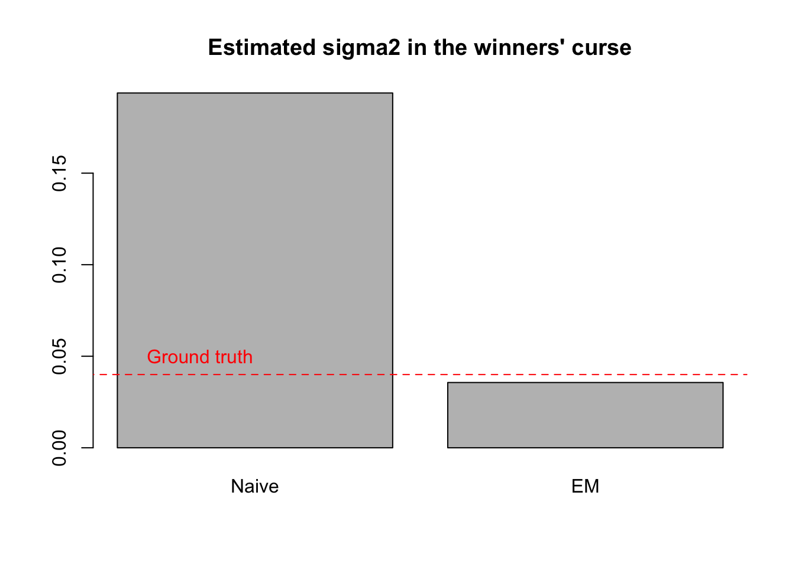
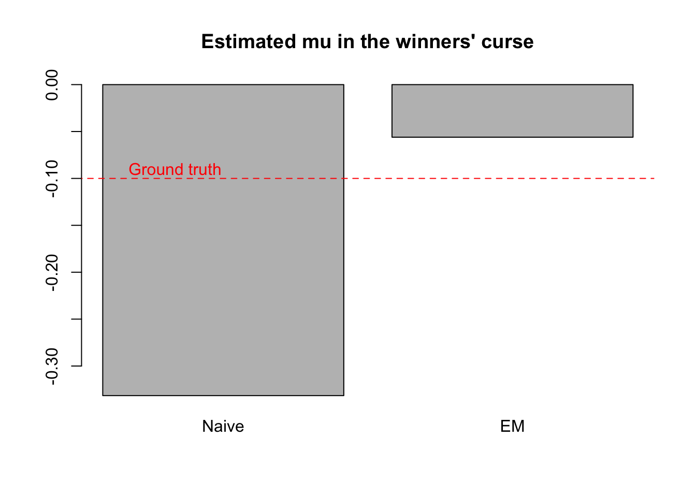
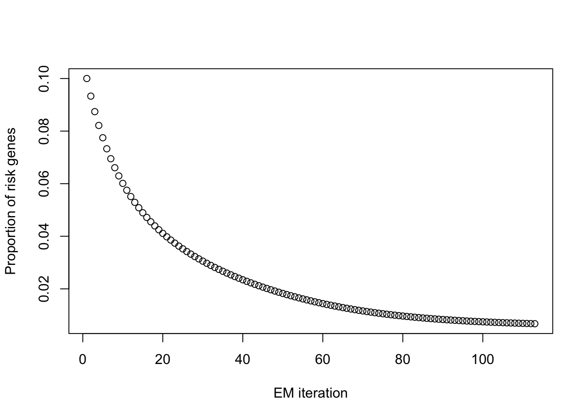
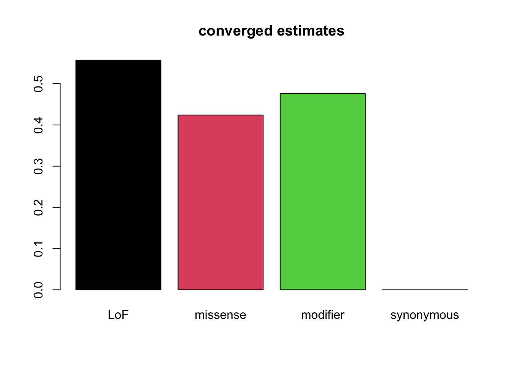
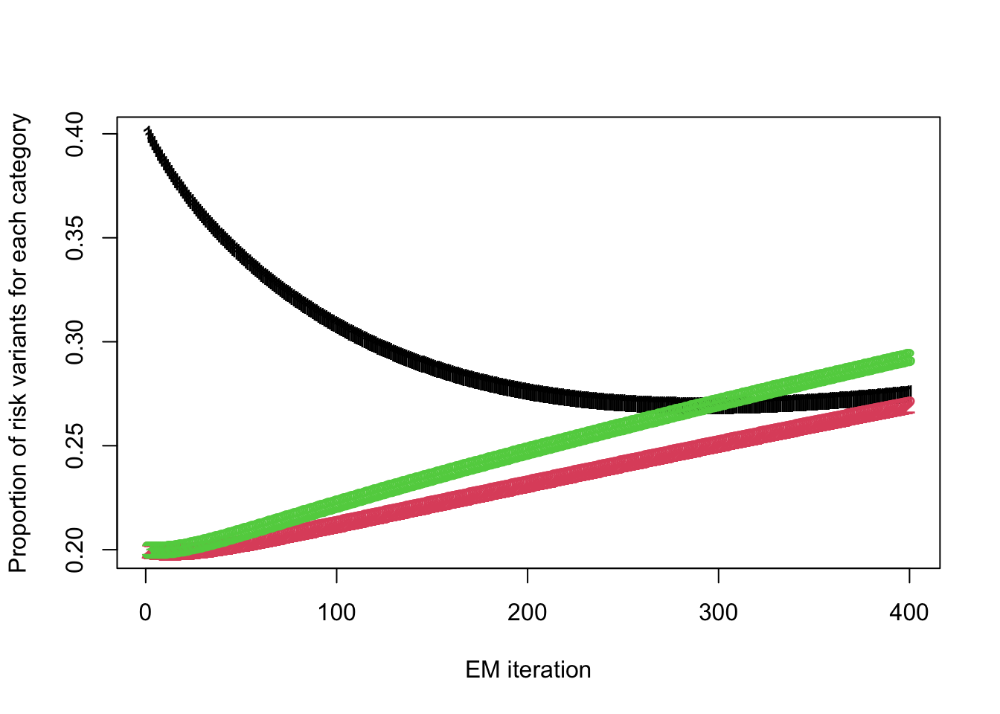
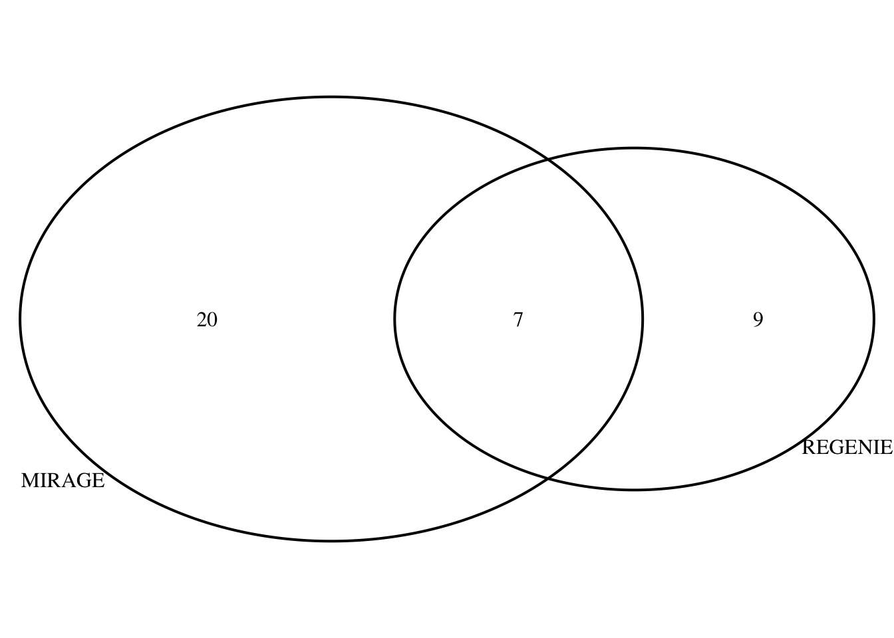

Updated real data analysis with S-MIRAGE
Lifan Liang
2026-03-13
Last updated: 2026-04-13
Checks: 6 1
Knit directory: eQTL_methods/
This reproducible R Markdown analysis was created with workflowr (version 1.7.2). The Checks tab describes the reproducibility checks that were applied when the results were created. The Past versions tab lists the development history.
The R Markdown file has unstaged changes. To know which version of
the R Markdown file created these results, you’ll want to first commit
it to the Git repo. If you’re still working on the analysis, you can
ignore this warning. When you’re finished, you can run
wflow_publish to commit the R Markdown file and build the
HTML.
Great job! The global environment was empty. Objects defined in the global environment can affect the analysis in your R Markdown file in unknown ways. For reproduciblity it’s best to always run the code in an empty environment.
The command set.seed(20250106) was run prior to running
the code in the R Markdown file. Setting a seed ensures that any results
that rely on randomness, e.g. subsampling or permutations, are
reproducible.
Great job! Recording the operating system, R version, and package versions is critical for reproducibility.
Nice! There were no cached chunks for this analysis, so you can be confident that you successfully produced the results during this run.
Great job! Using relative paths to the files within your workflowr project makes it easier to run your code on other machines.
Great! You are using Git for version control. Tracking code development and connecting the code version to the results is critical for reproducibility.
The results in this page were generated with repository version 0f2c980. See the Past versions tab to see a history of the changes made to the R Markdown and HTML files.
Note that you need to be careful to ensure that all relevant files for
the analysis have been committed to Git prior to generating the results
(you can use wflow_publish or
wflow_git_commit). workflowr only checks the R Markdown
file, but you know if there are other scripts or data files that it
depends on. Below is the status of the Git repository when the results
were generated:
Ignored files:
Ignored: .DS_Store
Ignored: .RData
Ignored: .Rhistory
Untracked files:
Untracked: VennDiagram.2026-02-23_11-42-42.log
Untracked: VennDiagram.2026-02-23_11-43-23.log
Untracked: VennDiagram.2026-02-23_11-44-14.log
Untracked: VennDiagram.2026-02-23_11-44-32.log
Untracked: VennDiagram.2026-02-23_11-44-41.log
Untracked: VennDiagram.2026-02-23_11-49-28.log
Untracked: VennDiagram.2026-02-23_12-24-58.log
Untracked: VennDiagram.2026-02-23_12-28-38.log
Untracked: VennDiagram.2026-02-23_12-29-28.log
Untracked: VennDiagram.2026-02-23_12-36-53.log
Untracked: VennDiagram.2026-02-23_12-37-03.log
Untracked: VennDiagram.2026-02-23_12-38-05.log
Untracked: VennDiagram.2026-02-23_12-38-06.log
Untracked: VennDiagram.2026-02-23_13-23-35.log
Untracked: VennDiagram.2026-02-23_13-23-36.log
Untracked: VennDiagram.2026-02-25_14-31-44.log
Untracked: VennDiagram.2026-03-02_17-30-44.log
Untracked: VennDiagram.2026-03-02_17-31-00.log
Untracked: VennDiagram.2026-03-02_17-31-05.log
Untracked: VennDiagram.2026-03-02_17-31-33.log
Untracked: VennDiagram.2026-03-03_14-09-34.log
Untracked: VennDiagram.2026-03-03_14-48-03.log
Untracked: VennDiagram.2026-03-03_14-48-04.log
Untracked: VennDiagram.2026-03-18_15-13-06.log
Untracked: VennDiagram.2026-03-18_15-13-38.log
Untracked: VennDiagram.2026-03-18_15-48-12.log
Untracked: VennDiagram.2026-03-18_16-31-23.log
Untracked: VennDiagram.2026-03-23_15-34-05.log
Untracked: VennDiagram.2026-03-23_15-34-22.log
Untracked: VennDiagram.2026-03-30_14-58-05.log
Untracked: VennDiagram.2026-03-30_14-58-07.log
Untracked: VennDiagram.2026-03-31_14-19-07.log
Untracked: VennDiagram.2026-03-31_14-19-08.log
Untracked: VennDiagram.2026-04-06_12-40-44.log
Untracked: VennDiagram.2026-04-06_12-40-46.log
Untracked: analysis/mirage_diag.Rmd
Untracked: data/23405_NMR_LDL_Cholesterol_GL_0218T174802Z_AZ_PheWAS_Portal.csv
Untracked: data/23405_NMR_LDL_Cholesterol_VL_0209T222639Z_AZ_PheWAS_Portal.csv
Untracked: data/REGENIE_mirage_res.RDS
Untracked: data/REGENIE_params_03122026.RDS
Untracked: data/REGENIE_post_gene_03122026.RDS
Untracked: data/mirage_sim_params.pdf
Untracked: data/neuron_stim_genotype_chr9_2e6-3e6.rds
Untracked: data/neutrophil_params.RDS
Untracked: data/neutrophil_pip.RDS
Untracked: data/params_alpham.RDS
Untracked: data/susie_code.R
Untracked: data/susie_simulation.zip
Untracked: data/three_type_LDL_risk_genes.RDS
Untracked: test_matrixeqtl.R
Unstaged changes:
Modified: analysis/MIRAGE_real_data.Rmd
Modified: data/mixedmodel_res_phi0.02.csv
Modified: data/mixedmodel_res_phi0.03.csv
Modified: data/mixedmodel_res_phi0.04.csv
Modified: data/mixedmodel_res_phi0.05.csv
Modified: data/scalability_snp.csv
Modified: data/twostep_res_phi0.02.csv
Modified: data/twostep_res_phi0.03.csv
Modified: data/twostep_res_phi0.04.csv
Modified: data/twostep_res_phi0.05.csv
Note that any generated files, e.g. HTML, png, CSS, etc., are not included in this status report because it is ok for generated content to have uncommitted changes.
These are the previous versions of the repository in which changes were
made to the R Markdown (analysis/MIRAGE_real_data.Rmd) and
HTML (docs/MIRAGE_real_data.html) files. If you’ve
configured a remote Git repository (see ?wflow_git_remote),
click on the hyperlinks in the table below to view the files as they
were in that past version.
| File | Version | Author | Date | Message |
|---|---|---|---|---|
| html | 0f2c980 | Lifan Liang | 2026-04-06 | Build site. |
| Rmd | 44dbb99 | Lifan Liang | 2026-04-06 | wflow_publish("analysis") |
| html | 3f42acb | Lifan Liang | 2026-03-30 | Build site. |
| Rmd | 8dc9e60 | Lifan Liang | 2026-03-30 | wflow_publish("analysis") |
| html | b0f4766 | Lifan Liang | 2026-03-18 | Build site. |
| Rmd | 7ace4d7 | Lifan Liang | 2026-03-18 | wflow_publish("analysis") |
| html | 44e9560 | Lifan Liang | 2026-03-18 | Build site. |
| Rmd | f8dba24 | Lifan Liang | 2026-03-18 | wflow_publish("analysis") |
Previous issues
We applied S-MIRAGE to REGENERON EWAS for the trait of LDL-C. The initial results discovered 9 genes, whereas the burden test from the original study found 14 genes.
One major issue is the winners’ curse for estimating \(\mu\) and \(\sigma\). These parameters will be severely overestimated using a truncated set. This is obvious with simulation experiments below. We synthesized 10,000 variants with true genetic effects and filtered the variants with Bonferroni cutoff (P<5e-7). Then we estimated \(\sigma\) and \(\mu\) from the filtered summary statistics. The estimated parameters have much larger magnitude than the ground truth.
# 1. Simulate a full genome of 10,000 variants
set.seed(42)
total_M <- 10000
true_mu <- -0.05
true_sigma2 <- 0.04
# True biological effects
true_beta <- rnorm(total_M, mean = true_mu, sd = sqrt(true_sigma2))
# Add measurement noise (standard errors around 0.1)
se_full <- runif(total_M, 0.08, 0.12)
beta_hat_full <- true_beta + rnorm(total_M, mean = 0, sd = se_full)
# 2. Apply a strict p-value filter (e.g., p < 0.01)
z_scores <- beta_hat_full / se_full
p_values <- 2 * pnorm(-abs(z_scores))
# Keep only the significant variants
sig_idx <- which(p_values < 5e-7)
obs_beta <- beta_hat_full[sig_idx]
obs_se <- se_full[sig_idx]
sigma2_hat <- var(obs_beta)-mean(obs_se^2)
mu_hat <- weighted.mean(obs_beta, w=1/(sigma2_hat+obs_se))
cat("Variants passing filter:", length(obs_beta), "out of", total_M, "\n")Variants passing filter: 325 out of 10000 cat("Ground truth variance of genetic effects", sqrt(true_sigma2), "\n")Ground truth variance of genetic effects 0.2 cat("Naive Variance Estimate (Winner's Curse):", sqrt(sigma2_hat), "\n")Naive Variance Estimate (Winner's Curse): 0.4402171 cat("Ground truth genetic effects:",true_mu, "\n")Ground truth genetic effects: -0.05 cat("Naive Mu estimate (Winner's Curse):", mu_hat," \n\n")Naive Mu estimate (Winner's Curse): -0.3315442 Correcting winner’s curse with EM algorithm
A more conceptually straightforward approach would be estimating \(\mu\) and \(\sigma\) inside the EM algorithm where we estimated \(\pi\) and \(\delta\). However, there is no close-form solution to the MLE of \(\mu\) and \(\sigma\). Optimization involve frequent computation of the likelihood function over half a million variants. The time complexity of such computation is too high for a single M-step.
It is more feasible to use variants above the Bonferroni threshold as true risk variants. But we need to account for the risk variants filtered by the Bonferroni threshold. EM algorithm can address this problem by treating the filtered causal variants as the missing data. And we are essentially finding \(\hat\mu\) and \(\hat\sigma\) that maximize the complete data log likelihood:
\[ \begin{align} \mathcal{ll}_{complete}(\mu,\sigma) &= \sum_{i=1}^N \mathcal{ll}(\hat\beta_i;\mu,\sigma,s_i) + \sum_{j=1}^{M-N} \mathcal{ll}(\hat\beta_j;\mu,\sigma,s_j) \end{align} \]
where \(N\) is the number of true
risk variants that pass the filter, and \(M\) is the total number of true risk
variants. In the M-step, we simply used optim() to find the
\(\mu\) and \(\sigma\) that maximzie the complete data
likelihood. The real problem is how to impute \(\hat\beta\) for the missing data given
\(\mu\) and \(\sigma\) in the E-step. We can expand the
log likelihood function related to \(\hat\beta\):
\[ \begin{align} \mathcal{ll}_{missing} &\propto \sum_{j=1}^{M-N}\dfrac{(\hat\beta_j - \mu)^2}{-2(\sigma^2+s_j^2)}\\ &\propto \sum_{j=1}^{M-N}(\hat\beta_j^2 - 2\mu \hat\beta_j) \\ &= (M-N)\left(E[\hat\beta^2] - 2 \mu E[\hat\beta]\right) \end{align} \]
To compute the complete data likelihood, we only need the first moment and the second moment of \(\hat\beta\) conditioned on failing the filter. A simpler and more general approach would be to perform Monte Carlo sampling to estimate the two moments. But that would be computationally expensive when M grows large. Fortunately, we can derive the analytical solution from the statistical results for the truncated Normal distribution:
\[ E[\hat\beta_j] = \mu + \sqrt{\sigma^2 + s_j^2} \cdot \left( \dfrac{\phi(\alpha_j)-\phi(\gamma_j)}{T_j} \right) \] where \(\phi\) is PDF for standard Normal, \(\alpha\) and \(\gamma\) are the truncation boundary after Z transformation (e.g. \(\alpha_j=\dfrac{\hat\beta_j - \mu}{\sqrt{\sigma^2 + s_j^2}}\)), and \(T_j\) is the proportion of \(Normal(\mu, \sigma^2+s^2)\) that falls within the Null truncation (\(\Phi(\alpha_j)-\Phi(\gamma_j)\)).
\[ E[\hat\beta_j^2] = Var(\hat\beta) + (E[\hat\beta])^2 \]
\[ Var(\hat\beta_j) = V_j\left[ 1+\dfrac{\alpha_j \phi(\alpha_j) - \beta_j\phi({\beta_j})}{T_j} - \left( \dfrac{\phi(\alpha)-\phi(\beta)}{T_j}\right)^2 \right] \]
em_winner_curse <- function(beta_hat, se, p_threshold, total_M,
init_mu = 0, init_sigma2 = 0.01,
max_iter = 500, tol = 1e-6) {
# 1. Basic Setup & Validation
N_obs <- length(beta_hat)
N_miss <- total_M - N_obs
if (N_miss <= 0) {
stop("total_M must be strictly greater than the number of observed variants.")
}
# Calculate the Z-score truncation threshold
c_thresh <- qnorm(1 - p_threshold / 2)
# Approximate the standard error for the missing variants
s_miss <- median(se)
# Initialize parameters
mu <- init_mu
sigma2 <- init_sigma2
for (iter in 1:max_iter) {
mu_old <- mu
sigma2_old <- sigma2
# ========================================================
# E-STEP: Impute expected moments for the missing variants
# ========================================================
V_miss <- sigma2 + s_miss^2
sd_miss <- sqrt(V_miss)
# Truncation boundaries
a <- -c_thresh * s_miss
b <- c_thresh * s_miss
# Standardize boundaries based on current parameter estimates
alpha <- (a - mu) / sd_miss
beta <- (b - mu) / sd_miss
# Normalization constant Z (probability of falling in the missing zone)
Z <- pnorm(beta) - pnorm(alpha)
# Prevent division by zero if Z gets vanishingly small
if (Z < 1e-15) Z <- 1e-15
# Calculate E[z] and E[z^2] for the standard normal
phi_alpha <- dnorm(alpha)
phi_beta <- dnorm(beta)
E_z <- (phi_alpha - phi_beta) / Z
E_z2 <- 1 + (alpha * phi_alpha - beta * phi_beta) / Z
# Unstandardize to get E[beta] and E[beta^2] for a single missing variant
E_beta_miss <- mu + sd_miss * E_z
E_beta2_miss <- mu^2 + 2 * mu * sd_miss * E_z + V_miss * E_z2
# ========================================================
# M-STEP: Maximize the expected complete data log-likelihood
# ========================================================
# We define the negative Q-function to minimize using optim()
neg_Q <- function(params) {
curr_mu <- params[1]
curr_sigma2 <- params[2]
# 1. Log-likelihood of the OBSERVED data
V_obs <- curr_sigma2 + se^2
ll_obs <- -0.5 * sum(log(V_obs) + (beta_hat - curr_mu)^2 / V_obs)
# 2. Expected log-likelihood of the MISSING data
V_m <- curr_sigma2 + s_miss^2
# E[(beta - mu)^2] = E[beta^2] - 2*mu*E[beta] + mu^2
exp_sq_diff <- E_beta2_miss - 2 * curr_mu * E_beta_miss + curr_mu^2
ll_miss <- -0.5 * N_miss * (log(V_m) + exp_sq_diff / V_m)
# Return negative sum for minimization
return(-(ll_obs + ll_miss))
}
# Optimize Q with respect to mu and sigma2 (keeping sigma2 > 0)
opt <- optim(par = c(mu, sigma2),
fn = neg_Q,
method = "L-BFGS-B",
lower = c(-Inf, 1e-8))
mu <- opt$par[1]
sigma2 <- opt$par[2]
# ========================================================
# Convergence Check
# ========================================================
if (max(abs(mu - mu_old), abs(sigma2 - sigma2_old)) < tol) {
cat("Converged successfully in", iter, "iterations.\n")
break
}
}
if (iter == max_iter) cat("Warning: Reached max_iter without fully converging.\n")
return(list(
estimated_mu = mu,
estimated_sigma2 = sigma2,
estimated_sigma = sqrt(sigma2),
iterations = iter
))
}We applied this EM algorithm to the data. The estimate for \(\mu\) and \(\sigma\) are much closer to ground truth than the naive estimate.
results <- em_winner_curse(
beta_hat = obs_beta,
se = obs_se,
p_threshold = 5e-7,
total_M = total_M,
init_mu = mean(obs_beta), # Good starting point
init_sigma2 = var(obs_beta) # Good starting point
)Converged successfully in 26 iterations.cat("EM estimate for genetic effect:", results$estimated_mu, "\n")EM estimate for genetic effect: -0.05604716 cat("EM estimate for variance of genetic effect:", results$estimated_sigma2, "\n\n")EM estimate for variance of genetic effect: 0.03565411 barplot(c(Naive=sigma2_hat, EM=results$estimated_sigma2), main="Estimated sigma2 in the winners' curse")
lines(c(0,10),c(0.04,0.04), col="red", , lty=2)
text(0.5,0.05,"Ground truth", col="red")
barplot(c(Naive=mu_hat, EM=results$estimated_mu), main="Estimated mu in the winners' curse")
lines(c(0,10),c(-0.1,-0.1), col="red", lty=2)
text(0.5, -0.09,"Ground truth", col="red")
Updated with AlphaMissense annotation
We currently have 78235 LoF variants and 328440 missense variants. The missense variants may need more detail annotations. So we use the prediction from AlphaMissense to annotate the missense variants. The missense variants were further divided into three categories: (1) likely pathogenic; (2) ambiguous; (3) likely benign.
library(ggplot2)
df <- data.frame(category=c("LoF","Pathogenic","Ambiguous","Benigh"),
mean=-0.06132739, -0.04140436, 0.01981949, -0.01473132,
SE=0.3368726, 0.2492694, 0.1797131, 0.2009707)
ggplot(df, aes(x = category, y = mean)) +
geom_point(size = 3, color = "blue") +
geom_errorbar(aes(ymin = mean - SE, ymax = mean + SE), width = 0.1) +
theme_classic()
Using this set of parameters to estimate the risk proportion of genes and variants, we have roughly 1.77% of genes being risk genes. The risk proportion for each category of variants are:
barplot(c("LoF"=0.28383799, "Pathogenic"=0.19723679, "Ambiguous"=0.06492431, "Benign"=0.07392038),
las=2, col=1:4)
This set of parameters yields 13 risk genes. Missing ZNF318 compared to the previous results.
Updated with estimating \(\sigma\) and \(\mu\) in the main EM algorithm
We applied a more loose threshold, P < 1e-5, to extract around 30 variants for the category of LoF and missense, respectively. Then we only used the top variant per gene. 7 variants remains for LoF and 10 variants for missense.
Use the most severe consequence of the variants and only use LoF and missense. Mu and Sigma were estimated for the two categories separately.
\[ \begin{align} \sigma_{LoF} = 0.5, && \sigma_{missense}=0.2 \\ \mu_{LoF} = -0.1, && \mu_{missense} = 0 \end{align} \]
We compared our methods with ACAT and the sumstats version of burden test.
library(VennDiagram)Loading required package: gridLoading required package: futile.loggertri.res <- readRDS("data/three_type_LDL_risk_genes.RDS")
p1 <- venn.diagram(tri.res, filename = NULL)
grid.newpage()
grid.draw(p1)
Burden test has found two more genes. Among the six genes uniquely discovered by the burden test, HMGCR is known to be related to the transportation of LDL. This gene is missed by S-MIRAGE because several variants have large positive Z score. But S-MIRAGE has estimated a negative \(\mu\) for the variant effects.
There are two limitations of updating \(\mu\) and \(\sigma\) with a few significant variants: (1) the small number of variants leads to high uncertainty of the estimate; (2) the estimator relies on a reasonable guess of the total number of true risk variants. If the number is too high, \(\sigma\) would be underestimated. If the number is too high, \(\sigma\) would be overestimated.
We modified the main EM algorithm to infer the posterior distribution of genetic effects given the variant is a risk variant and estimate \(\mu\) and \(\sigma\) in the M-step. Focusing on the variant-level summary statistics, the complete data likelihood looks like:
\[ \begin{align} \mathcal L(\hat\beta_i;\pi,\delta,\beta,U,Z_i,\mu,\sigma,s_i) &= P(\hat\beta_i|\beta_i,s_i) \cdot P(\beta_i|\mu,\sigma,Z=1) \cdot (Z_i=1|\pi) + P(\hat\beta_i|\beta_i=0,s_i) \cdot P(Z_i=0|\pi) \\ &= w_i P(\hat\beta_i|\beta_i,s_i) P(\beta_i|\mu,\sigma,Z=1) + (1-w_i)P(\hat\beta_i|\beta_i=0,s_i,Z=0) \end{align} \]
Since there is zero genetic effect when \(Z=0\), we only need to infer \(P(\beta_i|Z_i=1)\) for each variant in the E step and M step:
\[ P(\beta|\hat\beta, s, \mu, \sigma, Z=1) = \dfrac{\mathcal N(\hat\beta;\beta,s^2)\mathcal N(\beta;\mu,\sigma^2)}{\mathcal N(\hat\beta;\mu,\sigma^2+s^2)} \]
The mean and variance of such Normal-Normal posterior distribution is:
\[ E(\bar\beta_i) = E(\beta_i|\hat\beta_i, s, \mu^{(t)}, \sigma^{(t)}, Z=1) = \dfrac{\sigma^{(t)2}\hat\beta_i + s^2\mu^{(t)}}{\sigma^{(t)2}+s^2} \]
\[ Var(\bar\beta_i) = \dfrac{\sigma^{(t)2}s^2}{\sigma^{(t)2} + s^2} \]
With the posterior distribution of \(\bar\beta|Z=1\), we only focus on the situation on the scenario of maximize the Q function:
\[ \begin{align} Q(\mu^{(t+1)},\sigma^{(t+1)}| \mu^{(t)}, \sigma^{(t)}) = \underset{\mu,\sigma}{\arg\max} &E_{\bar\beta,Z}\sum_i \left[logP(\hat\beta_i|\bar\beta_i,s_i) + logP(\bar\beta_i|\mu, \sigma, Z_i) + logP(Z_i|\pi) \right] \\ \propto &E_{\bar\beta,Z}\sum_i logP(\bar\beta_i|\mu, \sigma, Z_i=1) \\ =&\sum_i w_i \cdot logP(\bar\beta_i|\mu, \sigma, Z_i=1) \\ \propto &\sum_i w_i \left(log(\sigma) - \dfrac{E_{\beta}[(\bar\beta-\mu)^2]}{2\sigma^2} \right) \end{align} \]
The partial derivative regarding \(\mu\) is:
\[ \dfrac{\partial Q(\mu^{(t+1)},\sigma^{(t+1)}| \mu^{(t)}, \sigma^{(t)})}{\partial \mu} = \sum_i w_i(E(\bar\beta) - \mu) \]
Setting the derivative to zero, we have:
\[ \mu^{(t+1)} = \dfrac{\sum_i w_i E(\bar\beta)}{\sum_i w_i} \]
Regarding \(\sigma\), the partial derivative is:
\[ \dfrac{\partial Q(\mu^{(t+1)},\sigma^{(t+1)}| \mu^{(t)}, \sigma^{(t)})}{\partial \sigma} = \sum_i w_i \left(\dfrac{1}{\sigma}-\dfrac{E_{\beta}[(\bar\beta-\mu)^2]}{\sigma^3} \right) \]
Setting the partial derivative to 0, we obtain:
\[ \begin{align} \sigma^2 &= \dfrac{\sum_i w_i E_{\beta}[(\bar\beta-\mu)^2]}{\sum_i w_i} \\ &=\dfrac{\sum_i w_i E[\bar\beta^2]}{\sum_i w_i} - 2\mu\dfrac{E[\bar\beta]}{\sum_i w_i} + \mu^2 \\ &=\dfrac{\sum_i w_i E[\bar\beta^2]}{\sum_i w_i} - \mu^2 \\ &=\dfrac{\sum_i w_i (Var(\bar\beta)+E[\bar\beta]^2)}{\sum_i w_i} - \mu^2 \end{align} \]
Therefore, we can compute both the first and second moment of \(\bar\beta\) in the E-step. And use that to update \(\mu\) and \(\sigma\) in the M-step.
We used the simulation setting in the simulation experiment to verify the EM algorithm. Repeating the experiment 20 times and compared that to the ground truth.
Performance of parameter estimation of EM algorithm within simulation experiment.
The parameter is quite different from those with Winners’ curse corrected. The prior for risk genes is 0.12%.
- Proportion of risk variants (\(\pi\))
LoF likely_pathogenic ambiguous likely_benign
0.2125837 0.3794041 0.7214281 0.5544170 - Genetic effects of the variants (\(\mu\))
LoF likely_pathogenic ambiguous likely_benign
-0.84745106 -0.10617588 0.04662553 -0.03533764 - Standard deviation of the genetic effects (\(\sigma\))
LoF likely_pathogenic ambiguous likely_benign
0.9595213 0.6414890 0.2902571 0.3111793 We only found 9 genes with these parameters. Among them is ABCG5.
One single Normal distribution assumes that variant effects are mostly small. It does not hold for rare variants that convey risks, especially the LoF variants. Moreover, although most variants’ impact on genes are mostly negative, the gene’s association to the trait could be positive or negative. This would flip the signs of the variant effects on the trait. Therefore, it would be more reasonable to adopt the symmetric bimodal distribution to model the genetic effects of the risk variants.
Application to neutrophil counts
We applied the same procedure to the summary statistics of the trait of neutrophil counts. The estimate of genetic parameter from 10 risk variants above the Bonferroni threshold were:
\[ \begin{align} \mu=0.01, && \sigma=0.11 \end{align} \]
We estimated the proportion of risk genes and risk variants with the genetic effect parameter. Risk variants from all categories converged to around 27%. The proportion of risk genes converged to 5.5%.

| Version | Author | Date |
|---|---|---|
| 0f2c980 | Lifan Liang | 2026-04-06 |
With the parameters above, we inferred the posterior of risk genes for all the 17723 genes. 27 of them has PIP>80%. Compared to the 16 risk genes identified in the original study, we have 7 genes in common.
GNB1 MRPS15 CSF3R ANXA9 MINDY1 LYST LY75 DPP4
1.0000000 0.9972757 1.0000000 0.8237136 0.8054039 0.9920613 0.9162834 0.8921505
CXCR2 STC2 ABHD16A KCNH2 JAK2 PRSS3 PDE3B SF1
0.9995549 0.9920977 0.9540280 0.8365244 1.0000000 0.8504258 0.8773075 0.9409263
ATM C11orf65 JAML SH2B3 ATXN2 NR1D1 LPO MPO
0.8541204 0.8876647 0.9992009 1.0000000 1.0000000 0.9156271 0.9999951 1.0000000
NHERF1 GNAS CHEK2
1.0000000 0.9934832 0.9903469 
| Version | Author | Date |
|---|---|---|
| 0f2c980 | Lifan Liang | 2026-04-06 |
sessionInfo()R version 4.1.2 (2021-11-01)
Platform: x86_64-apple-darwin17.0 (64-bit)
Running under: macOS Big Sur 10.16
Matrix products: default
BLAS: /Library/Frameworks/R.framework/Versions/4.1/Resources/lib/libRblas.0.dylib
LAPACK: /Library/Frameworks/R.framework/Versions/4.1/Resources/lib/libRlapack.dylib
locale:
[1] en_US.UTF-8/en_US.UTF-8/en_US.UTF-8/C/en_US.UTF-8/en_US.UTF-8
attached base packages:
[1] grid stats graphics grDevices utils datasets methods
[8] base
other attached packages:
[1] VennDiagram_1.7.3 futile.logger_1.4.3 ggplot2_4.0.1
[4] workflowr_1.7.2
loaded via a namespace (and not attached):
[1] tidyselect_1.2.1 xfun_0.54 bslib_0.3.1
[4] vctrs_0.6.5 generics_0.1.4 htmltools_0.5.9
[7] yaml_2.3.11 rlang_1.1.6 jquerylib_0.1.4
[10] later_1.3.1 pillar_1.11.1 glue_1.8.0
[13] withr_3.0.2 RColorBrewer_1.1-3 S7_0.2.1
[16] lambda.r_1.2.4 lifecycle_1.0.4 stringr_1.6.0
[19] gtable_0.3.6 evaluate_1.0.5 labeling_0.4.3
[22] knitr_1.50 callr_3.7.6 fastmap_1.1.1
[25] httpuv_1.6.10 ps_1.9.1 Rcpp_1.0.10
[28] promises_1.5.0 scales_1.4.0 formatR_1.14
[31] jsonlite_2.0.0 farver_2.1.1 otel_0.2.0
[34] fs_1.6.2 digest_0.6.31 stringi_1.7.12
[37] processx_3.8.6 dplyr_1.1.2 getPass_0.2-4
[40] rprojroot_2.1.1 cli_3.6.5 tools_4.1.2
[43] magrittr_2.0.4 sass_0.4.6 tibble_3.3.0
[46] dichromat_2.0-0.1 futile.options_1.0.1 whisker_0.4.1
[49] pkgconfig_2.0.3 rmarkdown_2.30 httr_1.4.7
[52] rstudioapi_0.17.1 R6_2.6.1 git2r_0.32.0
[55] compiler_4.1.2